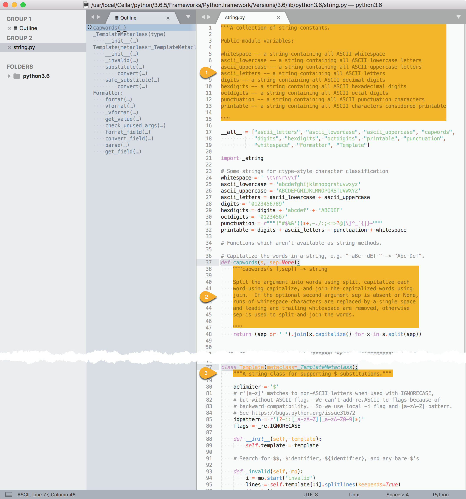
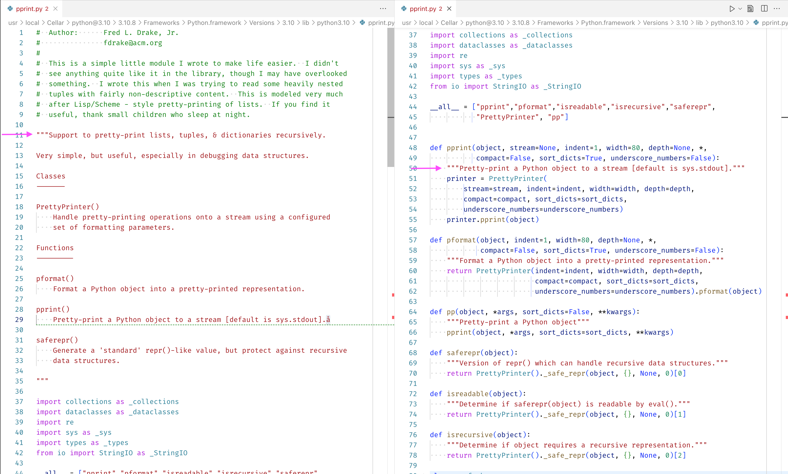

python inspect
介绍Python中包和模块的 __doc__ 和 __file__ 属性，并借此查看模块概述和文件路径。
Docstring#
A docstring is a string literal that occurs as the first statement in a module, function, class, or method definition.
Such a docstring becomes the __doc__ special attribute of that object.

pydoc 模块自动根据实现代码中各部分按约定格式定义的 docstring，聚合生成整个模块的帮助文档。
The pydoc module automatically generates documentation from Python modules.
调用 help() 的输出实际上就是整个模块的 docstrings 或各个部分的 docstring。
Calling
help()on methods or functions displays the docstrings.The built-in function
help()invokes the online help system in the interactive interpreter, which uses pydoc to generate its documentation as text on the console.
PEP 257 -- Docstring Conventions
使用Python的docstring
doc#
python 中每个 module，每个 class，每个 def 都留有写 doc 的地方。
关于 __doc__ 属性，参考 《Types and members》。
print(module.__doc__)：查看模块概述。
>>> # 查看 builtins 模块的 docstring
>>> import builtins
>>> print(builtins.__doc__)
Built-in functions, exceptions, and other objects.
Noteworthy: None is the `nil' object; Ellipsis represents `...' in slices.
>>>
>>> # 查看 string 模块的 docstring
>>> print(string.__doc__)
A collection of string constants.
Public module variables:
whitespace -- a string containing all ASCII whitespace
ascii_lowercase -- a string containing all ASCII lowercase letters
ascii_uppercase -- a string containing all ASCII uppercase letters
ascii_letters -- a string containing all ASCII letters
digits -- a string containing all ASCII decimal digits
hexdigits -- a string containing all ASCII hexadecimal digits
octdigits -- a string containing all ASCII octal digits
punctuation -- a string containing all ASCII punctuation characters
printable -- a string containing all ASCII characters considered printable
注意：先要 import module。
pprint#
在 py 目录下执行 python3 open_python_module_code.py pprint 打开 pprint.py 源码，第11~35行为模块的docstring（模块概要）。
第50、59、65行为函数 pprint、pformat、pp 的docstring（函数说明）。

模块代码文件开头定义的 pprint.__doc__ 即为 help(pprint) 帮助命令输出的 DESCRIPTION 部分：
>>> import pprint
>>> pprint.__doc__
"Support to pretty-print lists, tuples, & dictionaries recursively.\n\nVery simple, but useful, especially in debugging data structures.\n\nClasses\n-------\n\nPrettyPrinter()\n Handle pretty-printing operations onto a stream using a configured\n set of formatting parameters.\n\nFunctions\n---------\n\npformat()\n Format a Python object into a pretty-printed representation.\n\npprint()\n Pretty-print a Python object to a stream [default is sys.stdout].å\n\nsaferepr()\n Generate a 'standard' repr()-like value, but protect against recursive\n data structures.\n\n"
>>> help(pprint)
Help on module pprint:
NAME
pprint - Support to pretty-print lists, tuples, & dictionaries recursively.
DESCRIPTION
Very simple, but useful, especially in debugging data structures.
Classes
-------
PrettyPrinter()
Handle pretty-printing operations onto a stream using a configured
set of formatting parameters.
Functions
---------
pformat()
Format a Python object into a pretty-printed representation.
pprint()
Pretty-print a Python object to a stream [default is sys.stdout].å
saferepr()
Generate a 'standard' repr()-like value, but protect against recursive
data structures.
以下查看 pprint.pprint.__doc__：
>>> import pprint
>>> pprint.pprint.__doc__
'Pretty-print a Python object to a stream [default is sys.stdout].'
string#
string.__doc__即 string.docstring 截图中定义在模块代码string.py首部三引号包括的多行注释部分（Multi-line Docstrings）—— ①。
结合 help() 输出可知，包括紧随三引号后的 NAME 部分，以及间隔空行后的 DESCRIPTION 部分。
print(class.__doc__)（或print(object.__doc__)）：查看类说明。
>>> # 查看 builtins.str 类的 docstring
>>> print(str.__doc__)
str(object='') -> str
str(bytes_or_buffer[, encoding[, errors]]) -> str
Create a new string object from the given object. If encoding or
errors is specified, then the object must expose a data buffer
that will be decoded using the given encoding and error handler.
Otherwise, returns the result of object.__str__() (if defined)
or repr(object).
encoding defaults to sys.getdefaultencoding().
errors defaults to 'strict'.
>>> # 查看 string 模块的类 Template 的 docstring
>>> print(string.Template.__doc__)
A string class for supporting $-substitutions.
string.Template.__doc__即 string.docstring 截图中定义在模块代码string.py中 Template 类声明后的单行三引号注释部分（One-line Docstrings） —— ③。
print(class.method.__doc__)（或print(object.method.__doc__)）：查看类成员函数说明。
>>> # 查看 builtins.str 类的成员函数 format 的 docstring
>>> print(str.format.__doc__)
S.format(*args, **kwargs) -> str
Return a formatted version of S, using substitutions from args and kwargs.
The substitutions are identified by braces ('{' and '}').
>>>
>>> # 查看 string 模块的函数 capwords 的 docstring
>>> print(string.capwords.__doc__)
capwords(s [,sep]) -> string
Split the argument into words using split, capitalize each
word using capitalize, and join the capitalized words using
join. If the optional second argument sep is absent or None,
runs of whitespace characters are replaced by a single space
and leading and trailing whitespace are removed, otherwise
sep is used to split and join the words.
string.capwords.__doc__即 string.docstring 截图中定义在模块代码string.py中 capwords 函数体首部三引号包括的多行注释部分 —— ②。
结合 help() 输出可知，包括紧随三引号后的概要（summary line），以及间隔空行后（followed by a blank line）的详细说明部分（more elaborate description）。
inspect.getdoc#
通过 inspect.getdoc(object) 接口亦可获取 object 对应的 docstring（documentation string）：
>>> inspect.getdoc(str)
Traceback (most recent call last):
File "<stdin>", line 1, in <module>
NameError: name 'inspect' is not defined
# 需要先 import inspect 模块方可调用
>>> import inspect
>>> inspect.getdoc(str)
"str(object='') -> str\nstr(bytes_or_buffer[, encoding[, errors]]) -> str\n\nCreate a new string object from the given object. If encoding or\nerrors is specified, then the object must expose a data buffer\nthat will be decoded using the given encoding and error handler.\nOtherwise, returns the result of object.__str__() (if defined)\nor repr(object).\nencoding defaults to sys.getdefaultencoding().\nerrors defaults to 'strict'."
inspect.getdoc(str) 等效于 str.__doc__
inspect.getdoc(string) 等效于 string.__doc__
inspect.getdoc(string.Template) 等效于 string.Template.__doc__
inspect.getdoc(string.capwords) 等效于 string.capwords.__doc__
Source Code#
如果定位符号所在的包模块呢？
已经通过pip3安装了pdfminer，但是通过 from import 导入 PDFNoOutlines、PSLiteral、LTTextBox 时，如何确定具体在哪个子模块呢？
-
方案一：逐个 help 或 dir 子模块，肉眼查找类或函数名符号在哪个子模块中。
- 也可写个python脚本，遍历pdfminer所有模块的dir查找匹配某个符号。
-
方案二：通过 open_python_module_code.py（参见下文）脚本打开指定 pdfminer 包源代码进行查找。
- python3 open_python_module_code.py pdfminer
file#
关于 __file__ 属性，参考 《Types and members》。
在 python 主控制台中直接输入 module、module.function、module.class、module.class.method 也会显示其路径或类型等信息：
>>> import builtins
>>> builtins
<module 'builtins' (built-in)>
>>> builtins.print
<built-in function print>
>>> builtins.str
<class 'str'>
>>> builtins.str.format
<method 'format' of 'str' objects>
>>> import sys
>>> sys
<module 'sys' (built-in)>
>>> import os
>>> os
<module 'os' from '/usr/local/Cellar/python/3.6.5/Frameworks/Python.framework/Versions/3.6/lib/python3.6/os.py'>
>>> import array
>>> array
<module 'array' from '/usr/local/Cellar/python/3.6.5/Frameworks/Python.framework/Versions/3.6/lib/python3.6/lib-dynload/array.cpython-36m-darwin.so'>
在终端执行 python(3) 启动时，可携带 -v 选项，将输出详细的模块加载信息：
-v : verbose (trace import statements); also PYTHONVERBOSE=x
can be supplied multiple times to increase verbosity
另外，也可打印模块的 __file__ 属性来查看模块路径信息。
# builtins 模块未定义该属性
>>> import builtins
>>> builtins.__file__
Traceback (most recent call last):
File "<stdin>", line 1, in <module>
AttributeError: module 'builtins' has no attribute '__file__'
# sys 模块未定义该属性
>>> import sys
>>> sys.__file__
Traceback (most recent call last):
File "<stdin>", line 1, in <module>
AttributeError: module 'sys' has no attribute '__file__'
# string 模块对应 Python 源码
>>> import string
>>> string.__file__
'/usr/local/Cellar/python/3.7.4/Frameworks/Python.framework/Versions/3.7/lib/python3.7/string.py'
# os 模块对应 Python 源码
>>> import os
>>> os.__file__
'/usr/local/Cellar/python/3.6.5/Frameworks/Python.framework/Versions/3.6/lib/python3.6/os.py'
# array 模块对应 cpython 实现动态库
>>> import array
>>> array.__file__
'/usr/local/Cellar/python/3.6.5/Frameworks/Python.framework/Versions/3.6/lib/python3.6/lib-dynload/array.cpython-36m-darwin.so'
study the source code#
初学 Python 的一种有效途径是阅读 python 标准模块源码，通过阅读源码可观摩编码规范，了解语言风格，快速掌握 Python 程序设计的一般流程。
找到对应模块的 Python 源码路径，我们便可以使用文本编辑器打开进行研读。
os.system('open '+module.__file__)：调用 open 使用默认文本编辑器打开 module 源码：
>>> import argparse
>>> import os
# 调用 open 命令打开 argparse 模块源码
>>> os.system('open '+argparse.__file__)
# 调用 subl 命令打开 argparse 模块源码
>>> os.system('subl '+argparse.__file__)
当然，我们也可以先切换工作目录到 python 库源码目录，再调用 os.system('open '+'module'+'.py')。
>>> import os
# 获取当前工作目录并记录
>>> os.getcwd()
'/Users/faner'
>>> last_cwd=os.getcwd()
# 修改工作目录
>>> os.chdir('/usr/local/Cellar/python/3.6.5/Frameworks/Python.framework/Versions/3.6/lib/python3.6/')
>>> os.getcwd()
'/usr/local/Cellar/python/3.6.5/Frameworks/Python.framework/Versions/3.6/lib/python3.6'
# 调用 open 命令打开 python 库源码目录
>>> os.system('subl '+os.getcwd())
0
# 调用 subl 命令打开 python 库源码目录
>>> os.system('subl '+os.getcwd())
0
# 调用 open 命令打开指定 python 源码
>>> os.system('open '+'argparse'+'.py')
0
# 调用 subl 命令打开指定 python 源码
>>> os.system('subl '+'argparse'+'.py')
0
调用 subl 命令打开 python 库源码目录，可使用 Sublime Text 强大的搜索和定位功能进行高效阅读。
阅读 base64.py 可知内部调用了基础库 binascii，其为解释器内置模块（binascii.cpython-36m-darwin.so）。
>>> import binascii
>>> binascii
<module 'binascii' from '/usr/local/Cellar/python/3.6.5/Frameworks/Python.framework/Versions/3.6/lib/python3.6/lib-dynload/binascii.cpython-36m-darwin.so'>
参考 cpython 的 binascii.c.h。
openPythonModuleCode#
open_python_module_code.py 脚本打开指定名称的模块源代码进行学习。
open_python_module_code.py
#!/usr/bin/env python3
# -*- coding: UTF-8 -*-
"""
运行示例：
$ python3 open_python_module_code.py string
$ python3 open_python_module_code.py datetime
"""
import os
import sys
import importlib
def open_module_source_code(str_module_name):
try:
dynamic_module = importlib.import_module(str_module_name)
str_cmd = 'code ' # 'open ' # 'subl '
# module_path = inspect.getsourcefile(str_module_name)
str_file = dynamic_module.__file__ # 绝对路径
if str_file is not None:
(file_path, file_name) = os.path.split(str_file)
# dot_idx = str_file.rindex(os.extsep)
# file_ext = str_file[(dot_idx + 1):]
(file_name_prefix, file_name_suffix) = os.path.splitext(file_name)
if file_name_suffix == '.py': # ext
if file_name_prefix == '__init__':
print(str_cmd + file_path)
os.system(str_cmd + file_path) # vscode打开目录
else:
print(str_cmd + str_file)
os.system(str_cmd + str_file) # vscode打开文件
else: # 'module.cpython*.so'
# file_name_idx = str_file.rindex(os.sep)
# file_name = str_file[file_name_idx+1:]
print('module file: ', str_file)
else:
print('module file not exist!')
except (ImportError, AttributeError, ValueError) as e:
print(e)
sys.exit()
def main(args):
open_module_source_code(args[0])
# main entry
if __name__ == '__main__':
print('This program is being run by itself')
if len(sys.argv) < 2:
print('please input module name')
else:
main(sys.argv[1:])
else:
print('I am being imported from another module')
- 读取模块所在代码路径：
dynamic_module = importlib.import_module(module)导入指定 module，然后取其__file__属性，等效于module_path = inspect.getsourcefile(str_module_name)取其绝对路径。
- 判断文件后缀名是
.py：如果文件名是__init__.py，则用 vscode 打开所在目录；否则用 vscode 打开py源码。
以下为几组用例执行结果：
# ImportError
$ python3 open_python_module_code.py str
This program is being run by itself
No module named 'str'
# AttributeError
$ python3 open_python_module_code.py builtins
This program is being run by itself
module 'builtins' has no attribute '__file__'
# cpython.so
$ python3 open_python_module_code.py array
This program is being run by itself
module file: /usr/local/Cellar/python@3.9/3.9.7/Frameworks/Python.framework/Versions/3.9/lib/python3.9/lib-dynload/array.cpython-39-darwin.so
# python sourcefile
$ python3 open_python_module_code.py string
This program is being run by itself
code /usr/local/Cellar/python@3.9/3.9.7/Frameworks/Python.framework/Versions/3.9/lib/python3.9/string.py
# python sourcefile
$ python3 open_python_module_code.py argparse
This program is being run by itself
code /usr/local/Cellar/python@3.9/3.9.7/Frameworks/Python.framework/Versions/3.9/lib/python3.9/argparse.py
# python dir
$ python3 open_python_module_code.py pdfminer
This program is being run by itself
code /usr/local/lib/python3.9/site-packages/pdfminer
inspect#
How do I find the location of Python module sources?
除了通过 __file__ 属性外 ，还可通过 inspect 模块提供的一些接口，来查看某个类、对象或函数所属模块以及源文件等信息。参考 29.12.2. Retrieving source code 章节。
inspect.getfile#
inspect.getfile(object) 接口用于获取定义 object（模块、类或函数）的文件，python 源码或 cpython 动态库（so）。
inspect.getfile(object)
Return the name of the (text or binary) file in which an object was defined. This will fail with a TypeError if the object is a built-in module, class, or function.
对于内置模块、类或函数，调用该接口将报 TypeError 异常。
>>> # string 模块的代码
>>> inspect.getfile(string)
'/usr/local/Cellar/python/3.6.5/Frameworks/Python.framework/Versions/3.6/lib/python3.6/string.py'
>>>
>>> # array 模块的 cpython 实现 so
>>> inspect.getfile(array)
'/usr/local/Cellar/python/3.6.5/Frameworks/Python.framework/Versions/3.6/lib/python3.6/lib-dynload/array.cpython-36m-darwin.so'
>>>
>>> # str 类为内置 built-in class，报 TypeError 异常
>>> inspect.getfile(str)
Traceback (most recent call last):
File "<stdin>", line 1, in <module>
File "/usr/local/Cellar/python/3.6.5/Frameworks/Python.framework/Versions/3.6/lib/python3.6/inspect.py", line 654, in getfile
raise TypeError('{!r} is a built-in class'.format(object))
TypeError: <module 'builtins' (built-in)> is a built-in class
inspect.getsourcefile#
inspect.getsourcefile(object) 接口用于获取定义 object（模块、类或函数）的 python 源文件。
inspect.getsourcefile(object)
Return the name of the Python source file in which an object was defined. This will fail with a TypeError if the object is a built-in module, class, or function.
对于通过 cpython.so 动态库提供的模块接口，没有 python 源码，返回空。
对于内置模块、类或函数，调用该接口将报 TypeError 异常。
>>> # string 模块的代码
>>> inspect.getsourcefile(string))
/usr/local/Cellar/python/3.6.5/Frameworks/Python.framework/Versions/3.6/lib/python3.6/string.py
>>>
>>> # array 模块的源码？
>>> inspect.getsourcefile(array)
>>>
>>> # str 类为内置 built-in class，报 TypeError 异常
>>> inspect.getsourcefile(str)
Traceback (most recent call last):
File "<stdin>", line 1, in <module>
File "/usr/local/Cellar/python/3.6.5/Frameworks/Python.framework/Versions/3.6/lib/python3.6/inspect.py", line 684, in getsourcefile
filename = getfile(object)
File "/usr/local/Cellar/python/3.6.5/Frameworks/Python.framework/Versions/3.6/lib/python3.6/inspect.py", line 654, in getfile
raise TypeError('{!r} is a built-in class'.format(object))
TypeError: <module 'builtins' (built-in)> is a built-in class
inspect.getsource#
inspect.getsource(object) 接口用于获取 object（模块、类或函数）的 python 实现源码。
inspect.getsource(object)
Return the text of the source code for an object. The argument may be a module, class, method, function, traceback, frame, or code object. The source code is returned as a single string. An OSError is raised if the source code cannot be retrieved.
对于内置模块(builtins) 等以 so 形式未提供 python 源码，将报 TypeError 异常。
>>> # 解释器控制台输出 string.Template.substitute 实现源码
>>> inspect.getsource(string.Template.substitute))
def substitute(*args, **kws):
if not args:
raise TypeError("descriptor 'substitute' of 'Template' object "
"needs an argument")
self, *args = args # allow the "self" keyword be passed
if len(args) > 1:
raise TypeError('Too many positional arguments')
if not args:
mapping = kws
elif kws:
mapping = _ChainMap(kws, args[0])
else:
mapping = args[0]
# Helper function for .sub()
def convert(mo):
# Check the most common path first.
named = mo.group('named') or mo.group('braced')
if named is not None:
return str(mapping[named])
if mo.group('escaped') is not None:
return self.delimiter
if mo.group('invalid') is not None:
self._invalid(mo)
raise ValueError('Unrecognized named group in pattern',
self.pattern)
return self.pattern.sub(convert, self.template)
>>>
>>> # array 模块以 so 提供，未提供 python 源码，报 TypeError 异常
>>> inspect.getsource(array)
Traceback (most recent call last):
File "<stdin>", line 1, in <module>
File "/usr/local/Cellar/python/3.6.5/Frameworks/Python.framework/Versions/3.6/lib/python3.6/inspect.py", line 968, in getsource
lines, lnum = getsourcelines(object)
File "/usr/local/Cellar/python/3.6.5/Frameworks/Python.framework/Versions/3.6/lib/python3.6/inspect.py", line 955, in getsourcelines
lines, lnum = findsource(object)
File "/usr/local/Cellar/python/3.6.5/Frameworks/Python.framework/Versions/3.6/lib/python3.6/inspect.py", line 778, in findsource
raise OSError('source code not available')
OSError: source code not available
>>>
>>> # str 定义在内置模块(builtins)，以 so 提供，未提供 python 源码，报 TypeError 异常
>>> inspect.getsource(str)
Traceback (most recent call last):
File "<stdin>", line 1, in <module>
File "/usr/local/Cellar/python/3.6.5/Frameworks/Python.framework/Versions/3.6/lib/python3.6/inspect.py", line 968, in getsource
lines, lnum = getsourcelines(object)
File "/usr/local/Cellar/python/3.6.5/Frameworks/Python.framework/Versions/3.6/lib/python3.6/inspect.py", line 955, in getsourcelines
lines, lnum = findsource(object)
File "/usr/local/Cellar/python/3.6.5/Frameworks/Python.framework/Versions/3.6/lib/python3.6/inspect.py", line 768, in findsource
file = getsourcefile(object)
File "/usr/local/Cellar/python/3.6.5/Frameworks/Python.framework/Versions/3.6/lib/python3.6/inspect.py", line 684, in getsourcefile
filename = getfile(object)
File "/usr/local/Cellar/python/3.6.5/Frameworks/Python.framework/Versions/3.6/lib/python3.6/inspect.py", line 654, in getfile
raise TypeError('{!r} is a built-in class'.format(object))
TypeError: <module 'builtins' (built-in)> is a built-in class